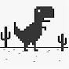

O MILAGRE DOS ANDES: O Maior Milagre do Mundo - Mistério do Voo 571
Você Sabia?
46.7 mi de inscritos
2.540.623 visualizações 8 de jan. de 2024
O MILAGRE DOS ANDES: O Maior Milagre do Mundo - Mistério do Voo 571

O filme todo é uma mistura de aflição e tristeza, mas mto bem produzido. E o quanto os tripulantes foram fortes, em todos os sentidos...
Tive arrepios enquanto assistia a este vídeo, Tiramos o chapéu para os sobreviventes por terem conseguido chegar ao outro lado. Não consigo imaginar ou compreender o que eles devem ter passado. Tiro o chapéu para vocês, por narrar este episódio comovente.
TEMOS QUE DAR VALOR NA
NOSSA VIDA , SÓ DE TÁ VIVO , NÃO VIVER RECLAMANDO POR COISA BOBA